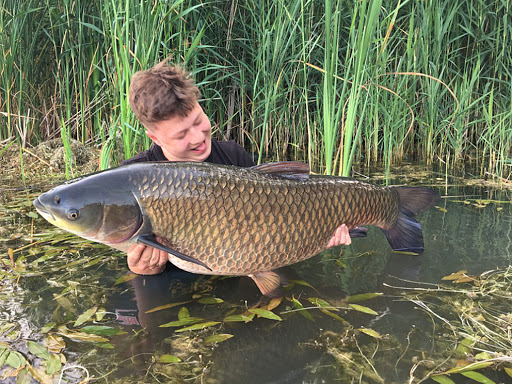

Amur biały (Ctenopharyngodon idella) to gatunek ryby z rodziny karpiowatych. Ciało jest walcowate, podłużne. Głowa jest dość szeroka z otworem gębowym końcowym. Łuska pokrywająca ciało jest dość duża i gruba, ciemna na brzegach. Amur biały posiada zęby gardłowe (dwa rzędy). Grzbiet jest zielonkawy, boki są żółtozielone.
Występowanie i środowisko
Ryba ta została sprowadzona do polskich wód dopiero na początku drugiej połowy XX wieku. Pierwotny obszar występowania to dorzecze rzeki Amur, Chiny w Azji. Preferuje wody stające, a więc stawy i jeziora. Lubi w zasadzie wody bliżej brzegu, szczególnie ze zwalonymi pniami drzew, trzciny i zarośla. Na dużych zbiornikach pływa dalej od brzegu.
Tryb życia i zachowanie
Ryba ta bardzo szybko rośnie.
Pożywienie
Ryba ta żeruje, gdy temperatura wody przekracza 12 °C. Zjada wodne rośliny, co bywa wykorzystywane przy oczyszczaniu z wodnej roślinności zbiorników wodnych. Młode osobniki, które mają długość do 2,5 cm, żywią się planktonem zwierzęcym. Zdolność do rozrodu ryba ta osiąga w 6 lub 7 roku życia.
Rozmnażanie
Ikra jest pelagiczna. W Polsce ryba ta się nie rozmnaża ze względu na zbyt niską temperaturę wody.
Ciekawostki
Amur biały jest wrażliwy na dźwięk. Szybko się płoszy.
Okres ochronny: nie ma
Wymiar ochronny: nie ma
Dobowy limit połowu: 3 szt. razem z boleniem, karpiem, lipieniem, pstrągiem potokowym, sandaczem, szczupakiem, brzaną
Rekord Polski: 39,20 kg 129 cm